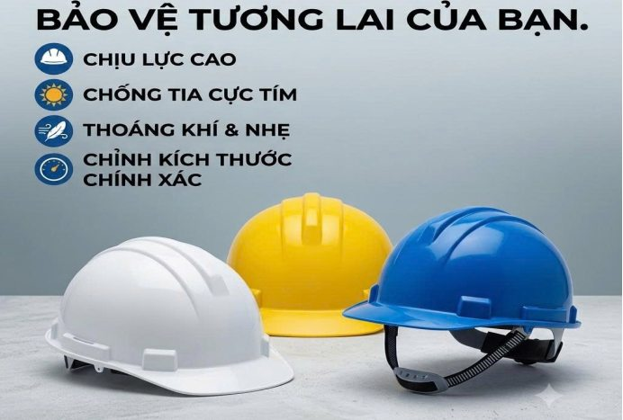
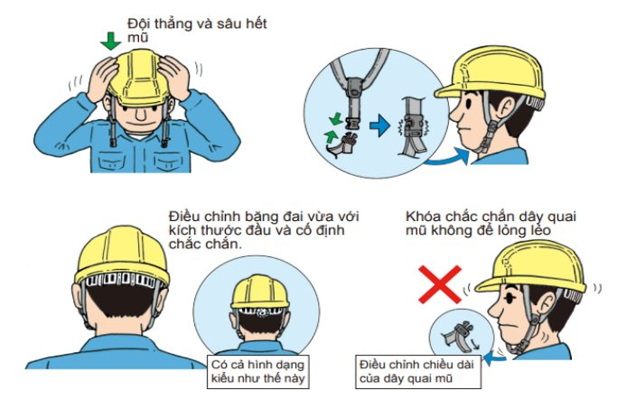
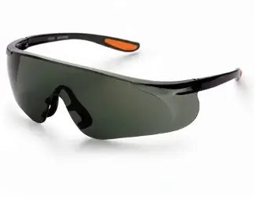
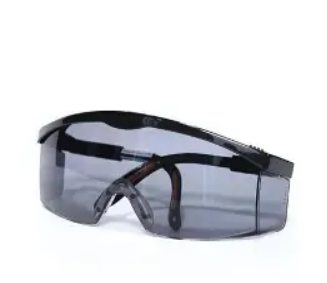

Từ nhà xưởng, công trường đến các dây chuyền sản xuất, người lao động luôn phải đối mặt với những nguy cơ ảnh hưởng trực tiếp đến sức khỏe và sự an toàn. Việc lựa chọn, trang bị thiết bị bảo hộ phù hợp vì thế trở thành yêu cầu quan trọng, góp phần hạn chế tai nạn và xây dựng môi trường làm việc an toàn.
Nhận diện nguy cơ, lựa chọn thiết bị bảo hộ phù hợp
Tại các nhà máy, công trường và xưởng cơ khí, mỗi vị trí làm việc có những đặc thù riêng. Công nhân vận hành máy móc có thể gặp nguy cơ va chạm, cuốn kẹp; người làm việc trong ngành xây dựng thường xuyên tiếp xúc với vật liệu nặng, bụi và các bề mặt không bằng phẳng. Trong khi đó, những công việc liên quan đến hàn cắt, hóa chất hoặc gia công kim loại lại đòi hỏi phương tiện bảo vệ chuyên biệt.
Thực tế, một sự cố nhỏ như mảnh kim loại bắn vào mắt, vật nặng rơi trúng chân hay tiếp xúc kéo dài với bụi công nghiệp đều có thể gây ảnh hưởng đáng kể. Do đó, thiết bị bảo hộ không đơn thuần là vật dụng đi kèm mà là một phần quan trọng trong công tác phòng ngừa tai nạn lao động.
Không phải thiết bị bảo hộ nào cũng có thể sử dụng trong mọi điều kiện làm việc. Tại mỗi vị trí, người lao động cần được trang bị phương tiện phù hợp với đặc thù công việc và những nguy cơ có thể gặp phải. Từ bảo vệ vùng đầu, bàn chân đến mắt, tay và hệ hô hấp, mỗi nhóm thiết bị đều đảm nhận một chức năng riêng trong việc hạn chế rủi ro.
Các nhóm thiết bị bảo hộ gắn với yêu cầu thực tế
Tại công trường xây dựng hay những nhà xưởng có nhiều máy móc, nguy cơ va đập từ vật liệu và thiết bị luôn hiện hữu. Mũ bảo hộ với phần vỏ cứng bên ngoài và hệ thống đai bên trong giúp hạn chế chấn thương vùng đầu khi xảy ra va chạm hoặc có vật rơi. Tuy nhiên, thiết bị chỉ phát huy tác dụng khi được đội đúng cách, quai mũ được điều chỉnh chắc chắn và phần vỏ không xuất hiện vết nứt, biến dạng. Đây cũng là những yếu tố cần được kiểm tra thường xuyên trong quá trình sử dụng.


Ở những khu vực thường xuyên vận chuyển hàng hóa hoặc làm việc trên nền trơn, giày bảo hộ là trang bị cần thiết để hạn chế chấn thương do va đập, vật sắc nhọn và trượt ngã. Trong khi đó, tại các xưởng cơ khí, đôi tay phải tiếp xúc liên tục với vật liệu và dụng cụ nên nguy cơ trầy xước, đứt tay cũng khó tránh khỏi nếu thiếu biện pháp bảo vệ. Tùy từng công đoạn, người lao động sử dụng găng tay chống cắt, găng phủ PU hoặc loại có khả năng kháng hóa chất phù hợp.
Những rủi ro khác xuất hiện trong quá trình gia công máy móc, đặc biệt ở các công đoạn hàn, cắt và mài kim loại. Bụi, mạt sắt và tia lửa phát sinh có thể gây tổn thương mắt, vùng mặt nếu không được che chắn. Bởi vậy, kính bảo hộ và mặt nạ hàn thường được sử dụng tại những vị trí này. Cùng với đó, quần áo bảo hộ giúp hạn chế tiếp xúc với bụi bẩn, dầu mỡ; riêng tại công trường hoặc khu vực có xe cơ giới hoạt động, áo phản quang hỗ trợ nhận diện người lao động, nhất là trong điều kiện thiếu ánh sáng.


Không chỉ có những nguy cơ nhìn thấy được, môi trường sản xuất còn tồn tại các yếu tố ảnh hưởng đến sức khỏe trong thời gian dài. Bụi mịn, khói hàn và hơi hóa chất có thể phát sinh trong quá trình gia công, sơn phủ hoặc xử lý vật liệu. Nếu tiếp xúc thường xuyên, người lao động có nguy cơ bị ảnh hưởng đến đường hô hấp. Tùy đặc điểm môi trường, khẩu trang lọc bụi hoặc mặt nạ có phin lọc chuyên dụng cần được sử dụng phù hợp. Tương tự, tiếng ồn từ máy dập, máy cắt và máy nén khí cũng là vấn đề cần lưu ý. Tại những vị trí có cường độ âm thanh cao, nút tai hoặc chụp tai chống ồn giúp hạn chế tác động đến thính lực khi làm việc trong thời gian dài.
Sử dụng đúng cách để nâng cao hiệu quả bảo vệ
Dù được trang bị đầy đủ, thiết bị bảo hộ vẫn có thể mất đi hiệu quả nếu không được sử dụng và bảo quản đúng cách. Trong quá trình làm việc, mũ bảo hộ có thể bị nứt do va đập, găng tay bị rách sau nhiều lần sử dụng hoặc khẩu trang không còn bảo đảm khả năng lọc. Những hư hỏng này đôi khi khó nhận biết nếu người lao động không kiểm tra thường xuyên. Vì vậy, việc vệ sinh, bảo quản và thay thế thiết bị khi cần thiết cần trở thành thói quen trong mỗi ca làm việc.
Tại các đơn vị sản xuất, công tác bảo hộ cũng không nên dừng lại ở việc cấp phát thiết bị. Người lao động cần được hướng dẫn cách sử dụng, nhận biết giới hạn bảo vệ và lựa chọn phương tiện phù hợp với từng vị trí. Chẳng hạn, một đôi găng tay chống cắt không đồng nghĩa với khả năng chống hóa chất; khẩu trang lọc bụi cũng không thể thay thế mặt nạ bảo vệ trong môi trường có khí độc.
An toàn lao động vì thế không chỉ được quyết định bởi số lượng thiết bị được trang bị, mà còn nằm ở cách lựa chọn và sử dụng trong thực tế. Khi mỗi người lao động chủ động bảo vệ bản thân, đồng thời đơn vị sản xuất duy trì việc kiểm tra và kiểm soát các nguy cơ tại nơi làm việc, thiết bị bảo hộ mới thực sự phát huy vai trò trong việc hạn chế tai nạn và bảo vệ sức khỏe lâu dài.